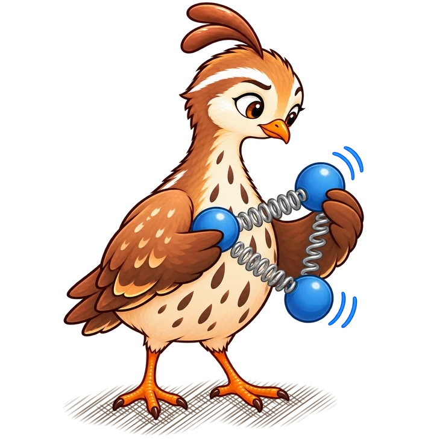

Normal modes
A molecule of N atoms has 3N − 6 vibrations (3N − 5 if it is linear). Each normal mode transforms as one irreducible representation of the point group, and the symmetry type decides whether there is a band in the IR spectrum and a line in the Raman spectrum. Mode shapes come from a simple valence force field; the frequencies are experimental fundamentals, but they are assigned within a harmonic model, without anharmonicity or Fermi resonance. For example, the symmetric stretch of CO₂ appears in the real Raman spectrum as a Fermi doublet near 1285 and 1388 cm⁻¹; 1333 cm⁻¹ is a nominal ν₁ value without the resonance.
What to understand
- A molecule of N atoms has 3N − 6 normal modes (3N − 5 if linear).
- Each mode transforms as an irreducible representation; the number of modes of each type is found from Γ3N and the reduction formula.
- IR-active modes transform like x, y, z, Raman-active ones like quadratic functions; with an inversion center the mutual exclusion rule applies.
- A degenerate mode is several shapes with one frequency.
Model limits: a harmonic model with a simple force field
- What is computed
- The forms of the normal vibrations, their symmetry, IR and Raman activity.
- Which approximations are made
- The harmonic approximation, a model valence force field; frequencies taken from experiment; anharmonicity and Fermi resonance are not included. H₂O lies in the yz plane (Mulliken's convention); the “Molecular point groups” page uses the xz plane, so the same vibration is labelled B₁ there, not B₂.
- What can be concluded
- The number and symmetry of the vibrations and the selection rules are reliable; the forms of the vibrations are qualitative; intensities are not computed.
1. Vibrations of a molecule
Drag the molecule to rotate it.
2. How many vibrations of each symmetry type
Counting by classes: for each class count the atoms that the operation leaves in place, multiply by the contribution of one atom χ = ±1 + 2cos φ (plus for rotations, minus for improper rotations and reflections) and obtain Γ3N. Subtract translations (transforming as x, y, z) and rotations (as Rx, Ry, Rz) and decompose the rest by the reduction formula.
3. IR and Raman spectra
A vibration is IR active if its symmetry type is that of x, y or z: the dipole moment then changes during the vibration. Vibrations of the same type as the quadratic functions x², xy, … are Raman active: they change the polarizability. For molecules with a center of inversion the rule of mutual exclusion holds: no vibration is active in both IR and Raman.
Check your knowledge
Exercises for exploring the page, plus a trainer. Do the action on the page and answer — your answer is checked right away.
H₂O: how many vibrations does the molecule have, and of which symmetry types?
CO₂: how many bands are there in the IR spectrum (fundamentals)?
IR bands
CH₄: how many lines are there in the Raman spectrum?
Raman lines
SF₆: how many vibrations are active neither in IR nor in Raman?
Inactive vibrations
Why does no frequency of CO₂ appear in both the IR and Raman spectra?
NH₃: there are 3N − 6 = 6 vibrations. How many distinct frequencies does the molecule have?
Distinct frequencies
Test yourself
For the molecule below find the number of vibrations, the number of distinct frequencies (a degenerate vibration counts as one frequency) and how many of them are IR and Raman active.